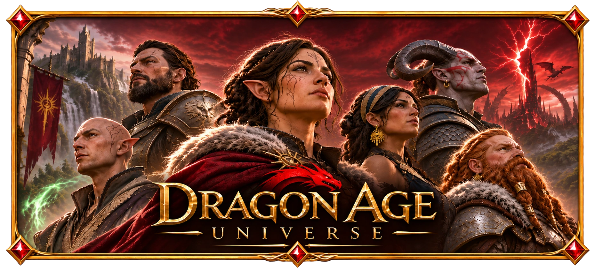
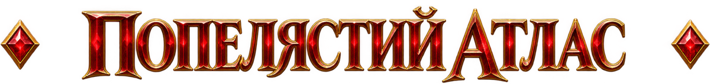

Фанатська інтерактивна ігрокнига
DRAGON AGE UNIVERSE


Авторська історія, що спирається на серію ігор всесвіту Dragon Age, лор, офіційні романи й комікси.

Створи свого героя. Сам вирішуй, як діяти. Кохай. Досліджуй Тедас - і відповідай за наслідки.
Не просто читати. Проживати.
Власний герой
Обирай расу, клас, походження, стать, портрет і стартові характеристики. Кожен герой має свій шлях.

Рішення з наслідками
Розгалужені сцени, небезпечні союзи, стосунки, таємниці, кілька фіналів і можливість повернутися по докази.

Світ Тедасу
Темне фентезі, фракції, архіви, міста й легенди, пов’язані з чотирма епохами Dragon Age.

Кожен вибір залишає слід у твоїй історії
Твоя пригода доступна українською та англійською. Прогрес зберігається на пристрої. Після входу через Google та ввімкнення хмарної синхронізації прогрес можна зберігати також на Google Drive.